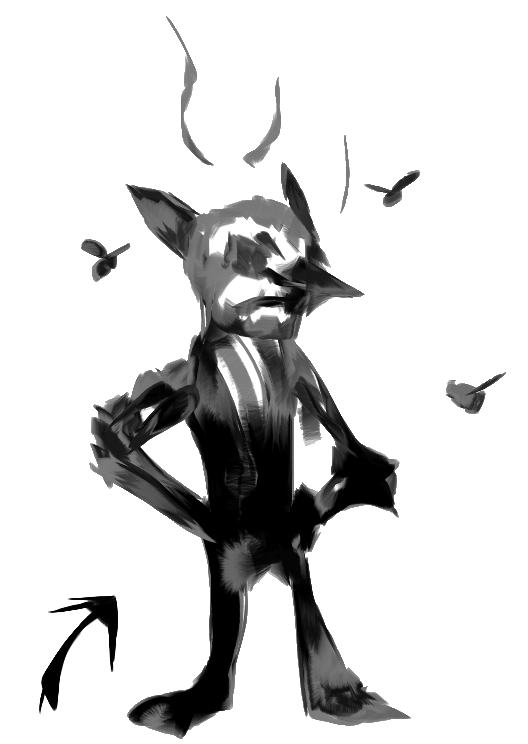
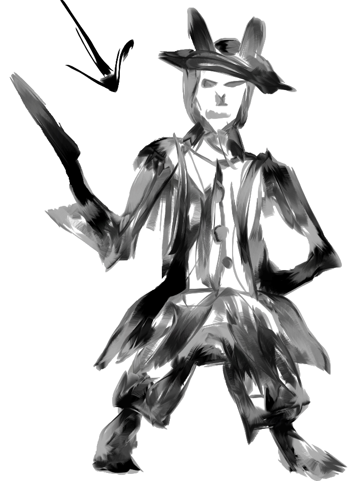
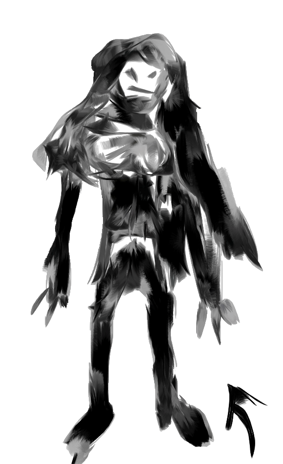
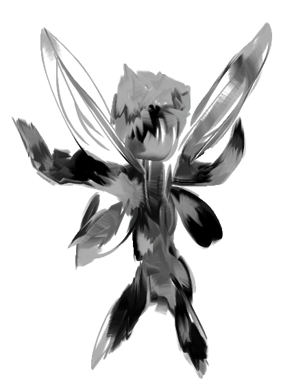
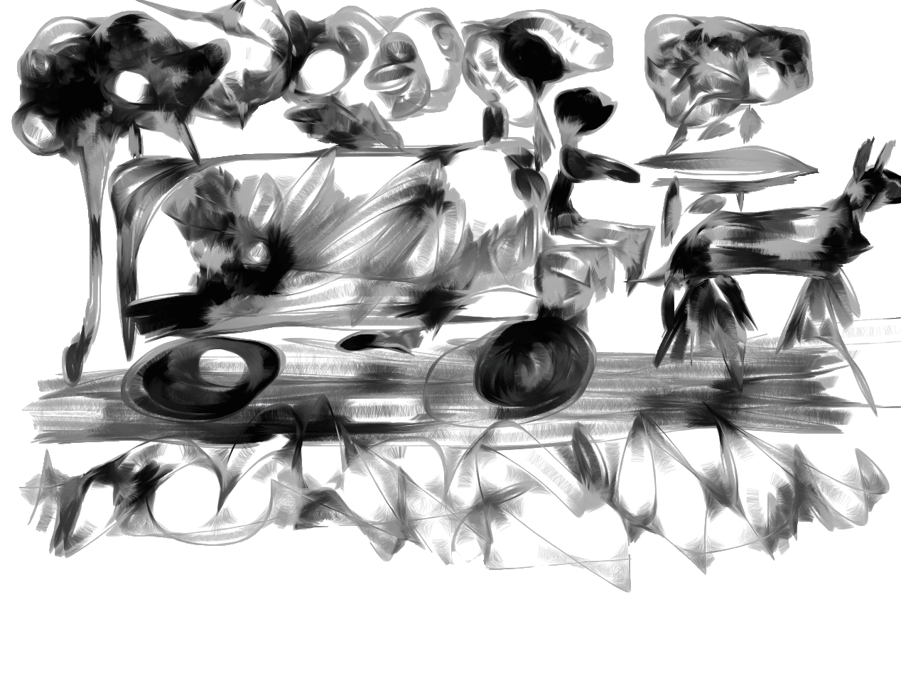

A remplir
Fin des notes
Civet Keudekoton le menteur !
Valentia la dent morte
Zyz le puant gobelin



Nou sommes parti vers fandanyl, je sui sur le beuf, ca me fatigue pa comme ca !

Je vais tou noter pour pas oublier
Jai rencontrer une personne el sapel Cherchepierre, je pense quil aime les pierres com moi !
il a promi de me donner des pierres si je ramen un chariot avec des gens juska Fen .. Fenda ? Fandanyl !

je vous presenteu mes gens avek moi juste apre !
MENTEUR ! C pas keu de koton !
Raelith eiga !
Uat grípa !